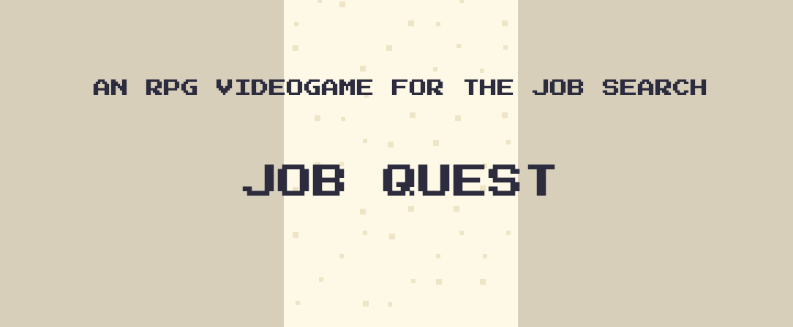
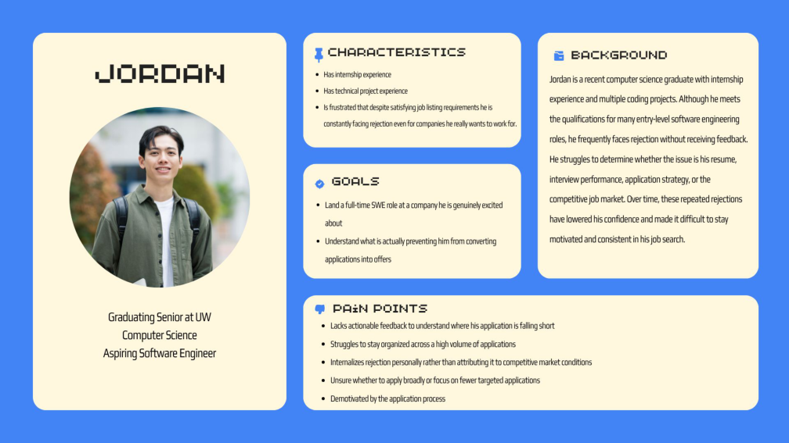
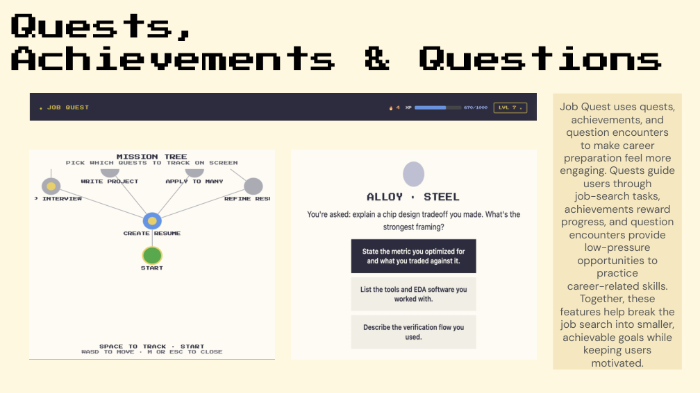
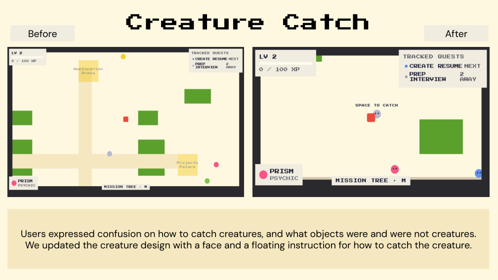

Interviews and surveys pointed to the need for structure, reassurance, and visible progress.
UX RESEARCH / GAME DESIGN · 2026
Job Quest
Turning a stressful job search into visible, manageable progress.
A browser-based game and application tool designed around the practical and emotional challenges graduating students face.

01 / Challenge
The problem
Graduating students face long application cycles, rejection, limited employer feedback, and uncertainty about how they are progressing. Our design challenge was to support motivation without losing the practical value of a job-search tool.
A UW peer career coach explained that employers often cannot provide individual feedback at scale.
02 / Research
From research to direction
Our team combined surveys, student interviews, literature review, and an expert interview. Two personas captured different early-career needs: Jordan, an aspiring software engineer, and Mara, an aspiring UX designer.
Participants described repeated rejection as emotionally draining.
Job seekers wanted clearer guidance and application tracking.
Feedback and manageable goals mattered as much as job listings.
03 / Solution
Two experiences, one goal
Job Quest combined application-management utilities with quests, achievements, question encounters, and shareable progress metrics. The application side explored resume tailoring, an ATS simulator, automation, and logging; the game side made progress visible.
Centralized job information, resume support, and status tracking.
Missions and achievements turn larger goals into smaller tasks.
Response rates, interviews, and applications show movement over time.
04 / Evaluation
What testing actually showed
Six graduating seniors took part in usability testing. Participants responded positively to gamification, but their feedback showed that moment-to-moment guidance needed work.
Engagement while exploring.
Moment-to-moment guidance.
Graduating seniors actively job searching.
05 / Iteration
Designing for clarity
Testing led to clearer creature designs and on-screen catching instructions. The team also refined mission-tree comprehension; spawn placement and discoverability remained important concerns.
Some testers could not distinguish creatures from other objects.
Creatures received recognizable faces and floating instructions.
Continue improving guidance and onboarding.
06 / Reflection
What I took away
This project showed me that good UX must address how a task feels, not just whether users can complete it. Motivation, feedback, and structure can be designed into the experience, but testing is essential to know whether they work.
PROJECT GALLERY
Research, interaction, and iteration
See how user understanding, game mechanics, practical tools, and usability feedback shaped the experience.


